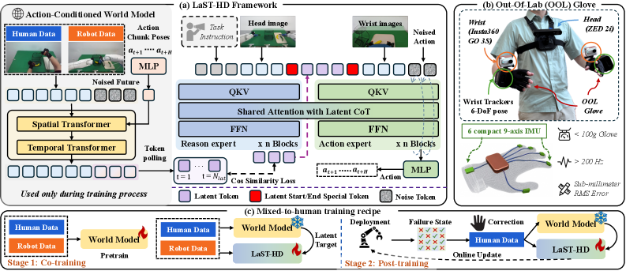
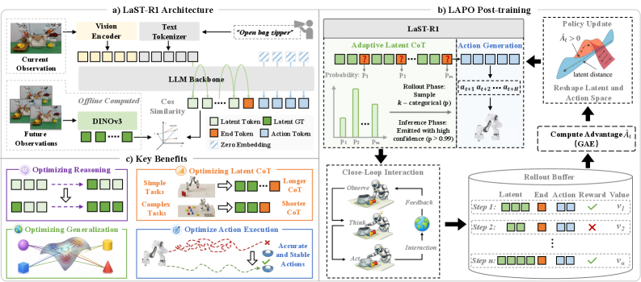

|
Yinxi Wang | 王印熹 Hi there! I'm a first-year undergraduate student at Peking University, majoring in Artificial Intelligence. Currently, I am a research intern at the HMI Lab at Peking University, advised by Prof. Shanghang Zhang. My research interests lie in Embodied AI, especially in World Models and Vision-Language-Action models, as well as Deep Reinforcement Learning. |
News |
Selected PublicationsMy research focuses on Embodied AI — world models, vision-language-action models, and deep reinforcement learning for robot manipulation. (* denotes equal contribution.) |
|
 |
LaST-HD: Learning Latent Physical Reasoning from Scalable Human Data for Robot Manipulation
Jiaming Liu*, Yinxi Wang*, Chenyang Gu*, Siyuan Qian*, Xiangju Mi*, Hao Chen, Jiawei Chen, Qingpo Wuwu, Xiaoqi Li, Nuowei Han, Yiming Zhang, Xuheng Zhang, Yang Yue, Yeqing Yang, Lei Wang, Peng Jia, Hao Tang, Shanghang Zhang arXiv preprint, 2026 arXiv / Project / Code Aligns human-hand and robot demonstrations in a shared latent space through an action-conditioned world model, enabling low-cost, data-efficient transfer of physical reasoning to robot manipulation. |
|
 |
LaST-R1: Reinforcing Robotic Manipulation via Adaptive Physical Latent Reasoning
Hao Chen, Jiaming Liu*, Zhonghao Yan*, Nuowei Han*, Renrui Zhang, Chenyang Gu, Jialin Gao, Ziyu Guo, Siyuan Qian, Yinxi Wang, Peng Jia, Shanghang Zhang, Pheng-Ann Heng arXiv preprint, 2026 arXiv / Project / Code A reinforcement-learning framework that lets a VLA policy perform adaptive latent chain-of-thought reasoning before acting, sharply improving manipulation generalization and execution stability. |
Education |

|
Peking University
B.S. in Computer Science, EECS 2025.08 - Present |
Research Experience |

|
Simplexity Robotics
Research Intern 2026.01 - present Research on Embodied AI and Robot Manipulation |
|
|
Peking University
Research Intern, HMI (Human Machine Intelligence) Lab 2024.07 - Present
Embodied AI |
|
Design adapted from Jon Barron's template. |